Director of UX Design & Research
At Qualtrics I led the global UX Design & Research organization. I was responsible for creating great user and buyer experiences across all Qualtrics products. My team included UX design, visual design, user research, and information architecture, for web and mobile applications. I built the team and disciplines from the ground up to 20+ team members.
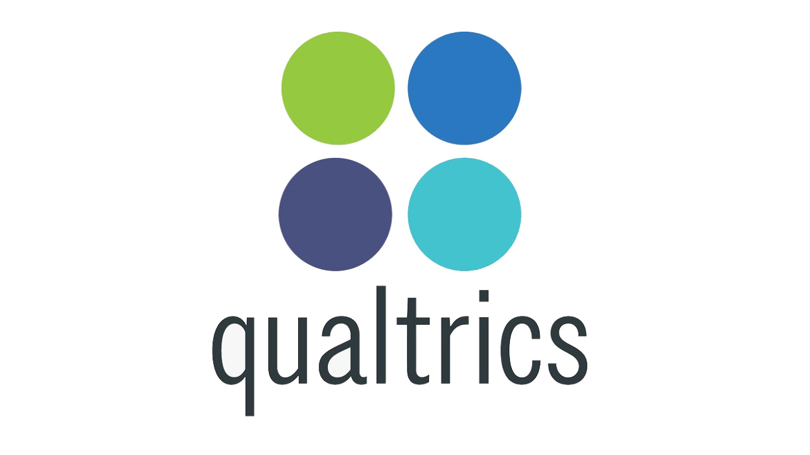
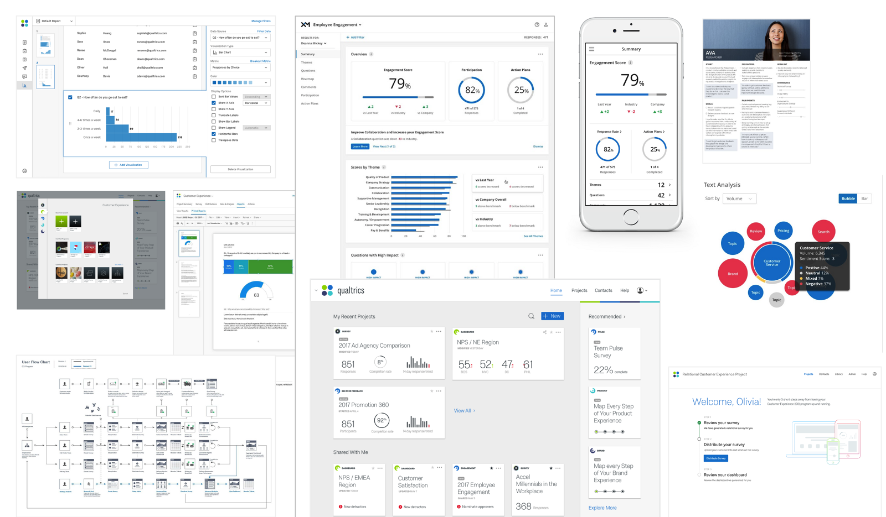
When I joined Qualtrics there was a range of very different web applications all with their own user experience and technology stack. One of my main missions was to bring those together in one platform.
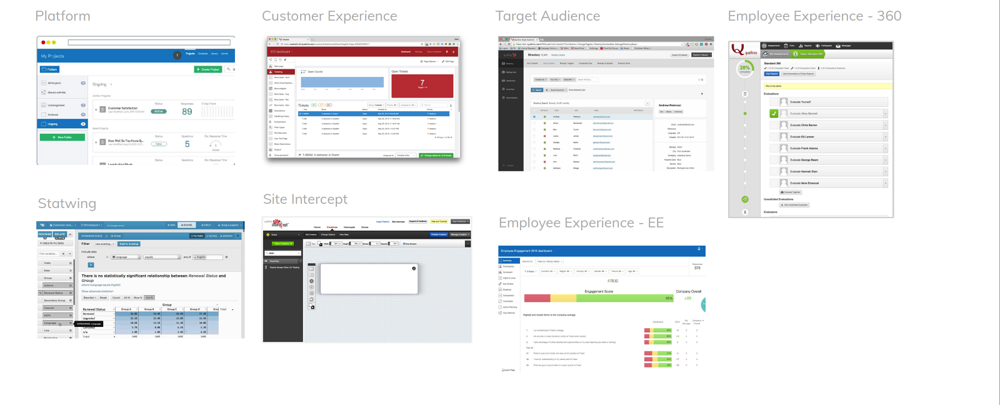
My team and I brought these applications together in the Experience Management (XM) Platform with a common Design System including interaction design, workflow design and visual design.
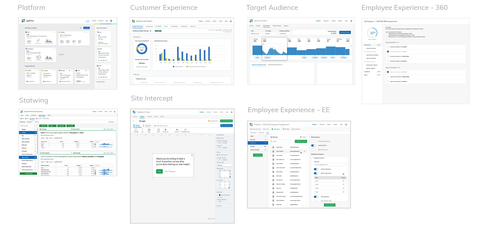
Bringing all the products together under one platform and navigation meant a new homepage and navigation mechanisms to get to various products you have access to as part of your subscription.
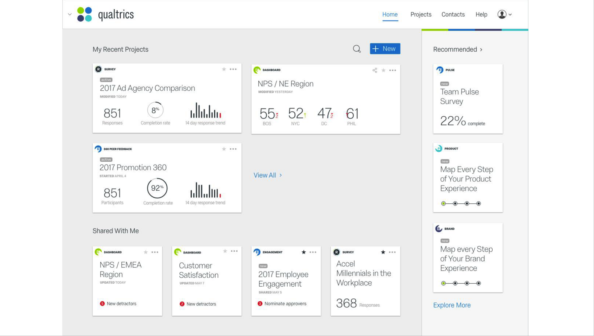
Dashboards were a key aspect of all Qualtrics products. On the left an example of one. The Qualtrics survey builder is also a core aspect of all Qualtrics products and how the company started. On the bottom right a redesign of that one. On the top right is an example of Report Builder to make it much easier for users to create compelling reports out of their data.
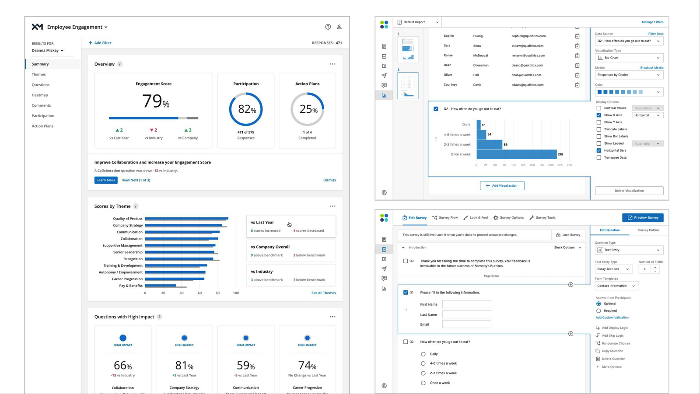
Here you see the transformation from the old Report Builder interface and workflows to a new report builder.
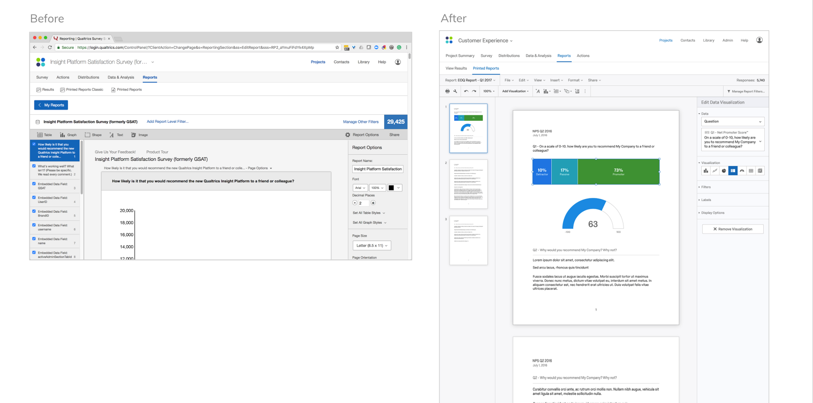
Mobile was a key aspect of the products, both on the survey taking side as well as on the data reporting side (shown here).
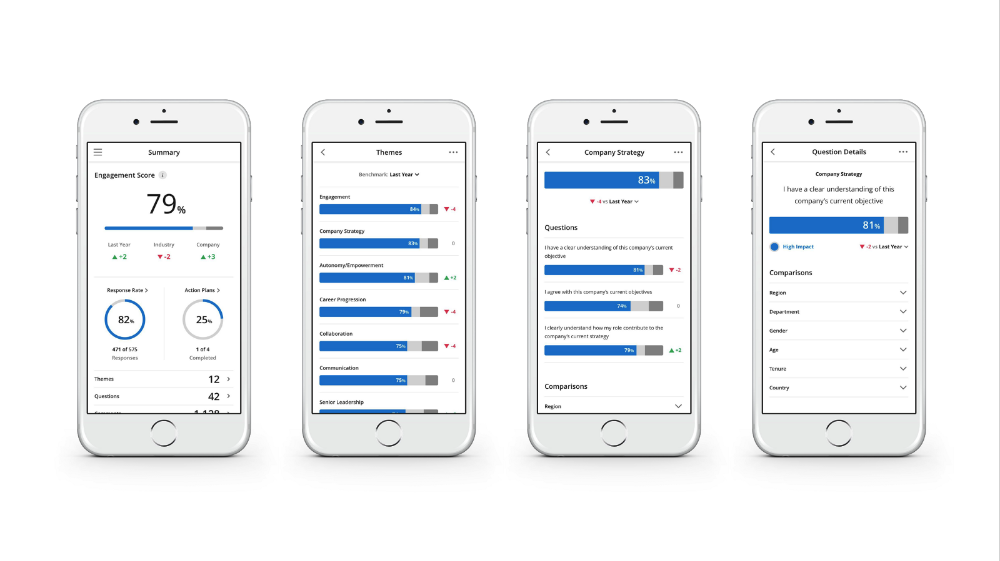
One key area of focus was to create competitive advantage through patents. Here is one of those patents. I came up with this new data visualization for our AI powered sentiment analysis tool. In this data visualization various different dimensions are visualized at the same time: overall topic and sentiment (color of the core circle), prevalence of the sentiment (size of the circle), and distribution of responses within that topic by sentiment. We patented this data visualization (US 20220138265).
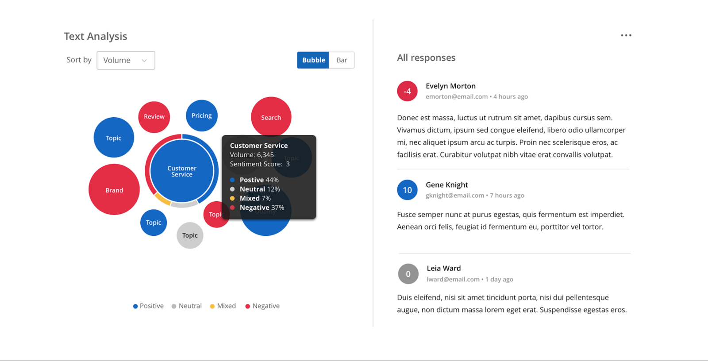
The XM platform had many third party extensions to more closely integrate and automate various parts of your customer experience data sources and outputs. Here is a way to differentiate between standard included functionality and optional additions. Key was to enable upsell in a way that users would see value in and could dismiss if they were not interested.
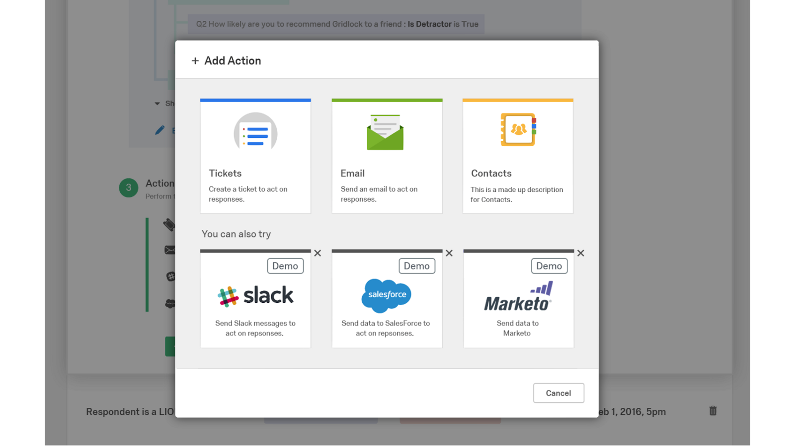
There were many complex workflows across the Qualtrics and third party-product landscape that we uncovered through research and then improved through product design. We used mini-wires to communicate these. Here is an example of the CX workflows including operational flows and strategic ones we focused on adding and differentiating through.
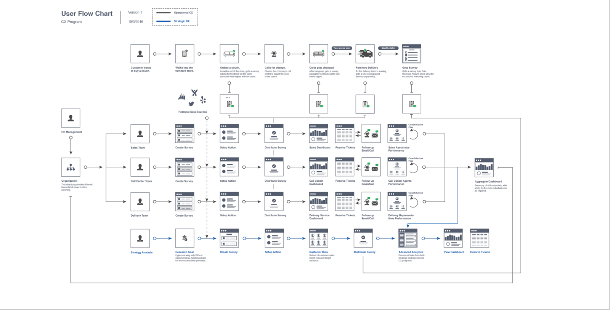
Qualtrics products had 16 different condition editors.
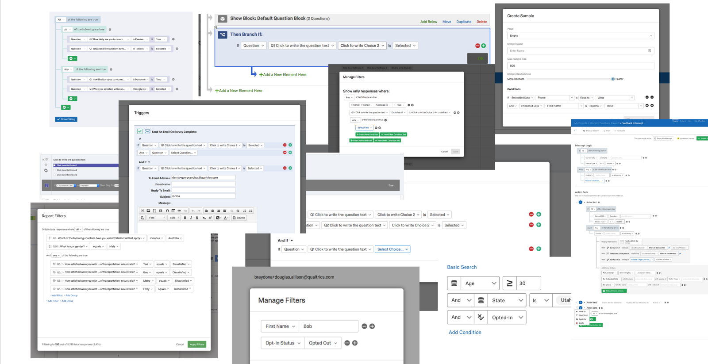
We brought all those condition editors across products together in one single one that got used everywhere.
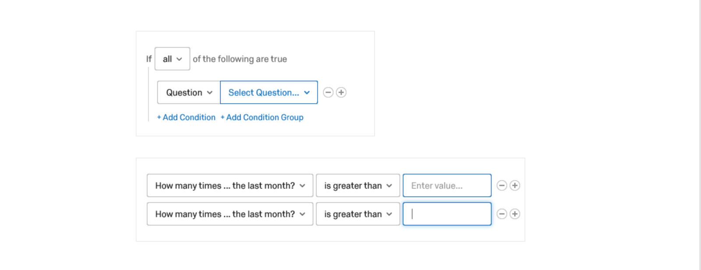
My team and I established the first continuous usability benchmarking program at Qualtrics. This consisted of an in-product SUS survey across all products which we triggered to cohorts of users at a specific frequency. We reported on this data continuously through dashboards in our office and accessible to all of Qualtrics. This resulted in on a continuous basis being able to not only compare Qualtrics products in terms of usability and usefulness, but also compare them with the larger tech industry. Once set up this ran automatically with minimal maintenance.
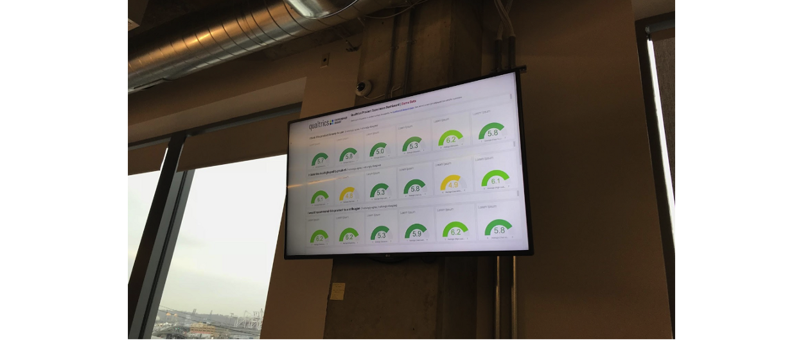
Of course part of building a UX team at a company also includes building a UX team identity. Here is a key piece of that representing the many facets and craft of UX. Besides using this in presentations, guidelines and swag, we also used it to recognize others. We ran a UX ambassador program to recognize individuals not on the UX team who contributed significantly to the user experience of our products by giving them swag with this brand on it to proudly wear (and they did).
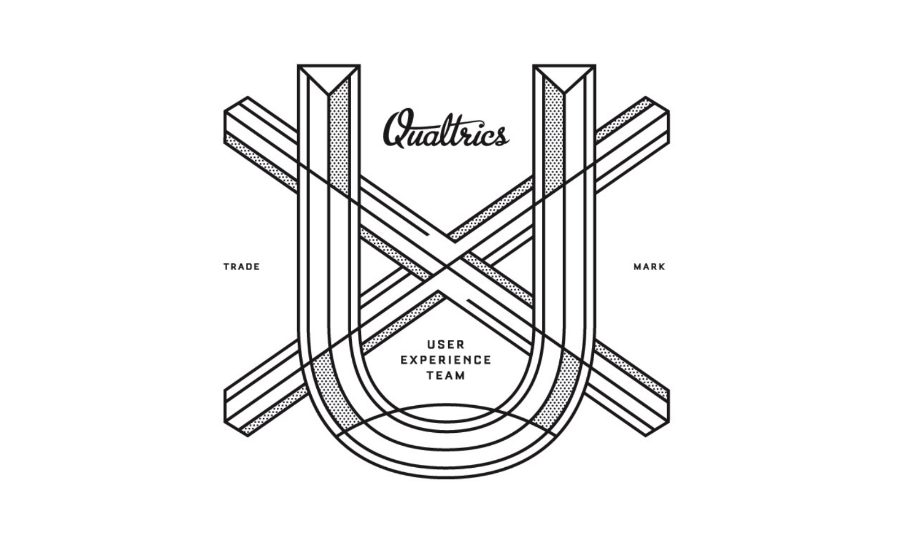
"Daan established Qualtrics' User Experience team, from creating its UX hiring practices, to hiring the team, to developing a design language, to building pattern libraries and style guides. Beyond building teams he is dedicated to building great products."
"His design leadership contributed significantly to Survey Platform growth in customer satisfaction, renewal rate and usage! Daan was able to get everyone along—Product, Engineering, UX, Marketing—on making tough product design decisions."